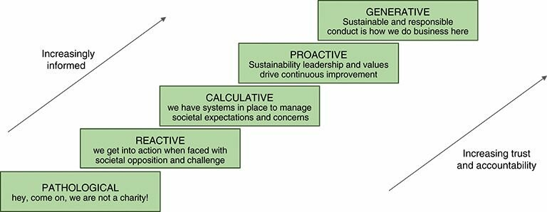

Samir's linkedin
Read: How to (seriously) read a scientific paper
- abstracting article (my opinionated summary):
- select papers benefit your knowledge
- read abstract
- read conclusion
- have a look at graphs and plots, understand those
- read sections clarify what you didn't understand
Difference btween safety and sustainability:
R. Westrum and P.T.W. Hudson modeled "Safety Ladder" of 5 steps for corporate to reach #safety maturity, applying same model to #sustainability ladder as in figure. One difference is that safety will tend to develop its own specific systems, processes, and tools while sustainability will tend to ride on existing processes and borrow proven tools. So the question is; will sustainability concepts bring safety (including #health and #environment) below its wing? https://pubs.spe.org/en/jpt/jpt-article-detail/?art=6382 
COVID-19 in J
NB. a complete #jlang program in a single notice
NB. Extract data, filter, plot, and calculate linear regression
require 'tables/csv web/gethttp plot'
gets =: 4 : '(I. (<y) E. 0{|:x){x'
lreg =: 4 : 'y %. 1 ,. x'
treg =: 3 : '((1{((i.#y) lreg y))*(i.#y))+(0{((i.#y) lreg y))'
col =: 4 : 'makenum x { |: y'
covid =: fixcsv gethttp dquote 'https://raw.githubusercontent.com/owid/covid-19-data/master/public/data/owid-covid-data.csv'
lastndays =: 4 : 0 '|. y {. |. 5 col covid gets x'
plot 'USA' lastndays 100